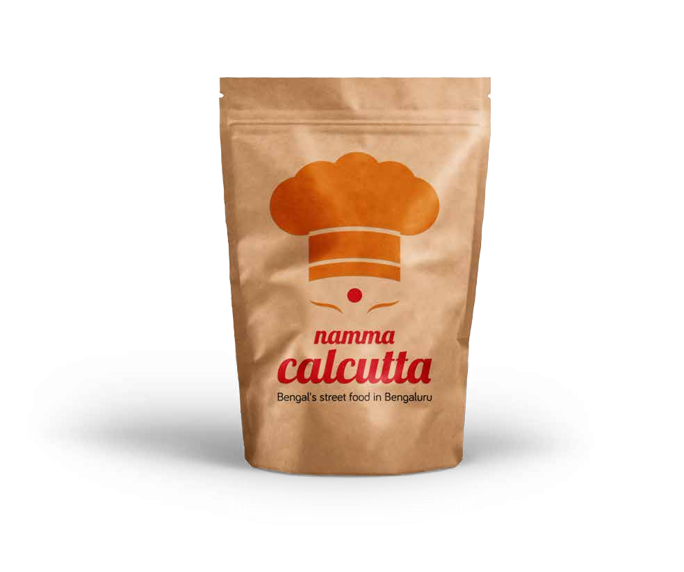
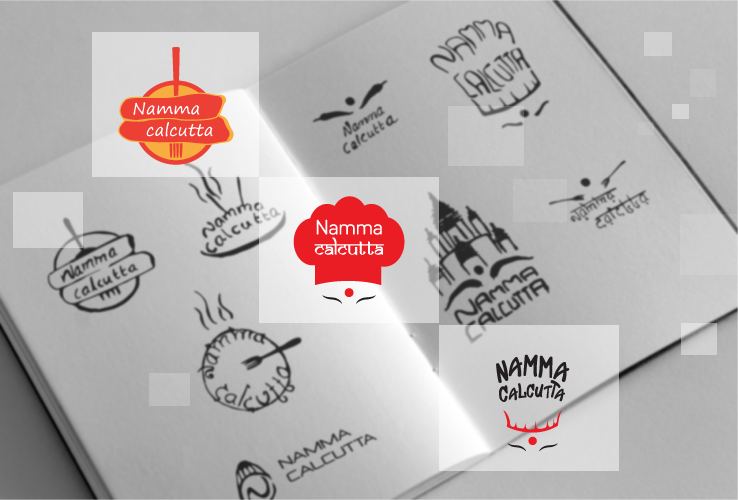
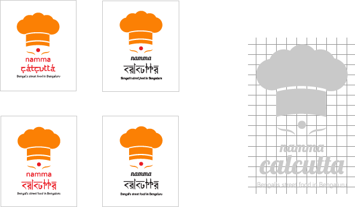

namma
calcutta
Bengal's street food in Bengaluru
Namma Calcutta brings the famous Bengali cuisine to Bengaluru. It is a hot spot for true Bengalis and people who love the Calcutta cuisine. And for this exciting project, we mixed the cultural aura of Bengal and the lively Indian shades.

To stand true to the culture of Bengal, the logo followed the thought process of combining delicacies with the admirable structures of Bengal. The iconic Bengali Durga Devi and the chef’s cap stood out- a quirky twist to an exciting cuisine.
lobster Regular


The design of the menu is blended with exciting colors of the food. The rustic food photography and the bright Indian colors emanate a Bengali nostalgia.